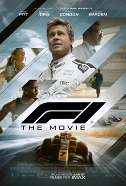

2025 film · directed by Joseph Kosinski
Does Brad Pitt die in F1?
He plays Sonny Hayes.
Want to guess first?
Revealing shows only the answer. Everything else stays behind its own curtain.
No.
He is alive when the credits roll.
How it happens, in words. No pictures yet.
Wins Abu Dhabi and drives off to the next race.
Aging journeyman Sonny Hayes returns to Formula One with the failing APXGP team thirty years after a near-fatal 1993 crash. He walks away from more crashes (Silverstone, a fiery Las Vegas pileup that briefly gets him fired, a minor Abu Dhabi shunt) while hiding that his old injuries make him medically unfit to race. In the Abu Dhabi finale he holds off Lewis Hamilton, takes his first F1 win, saves the team, and is last seen heading off to race in Baja.
Sonny's teammate Joshua Pearce also survives a serious crash.
- Director
- Joseph Kosinski
- Runtime
- 155 min
Where to find the scene.
The scene
No clip on file yet. Search YouTube for the scene